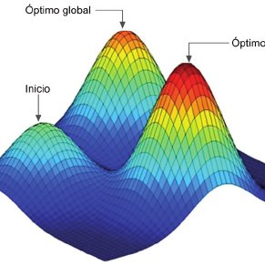
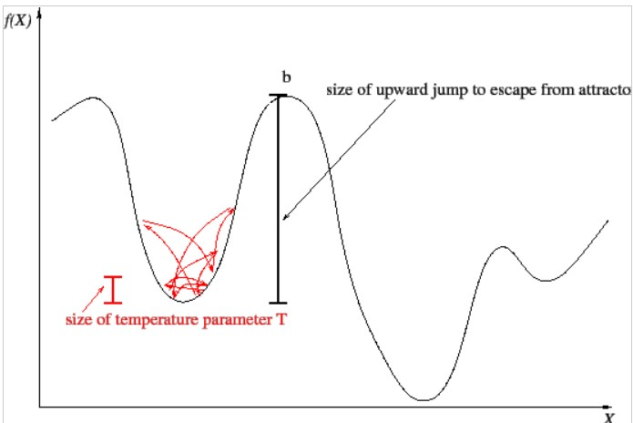
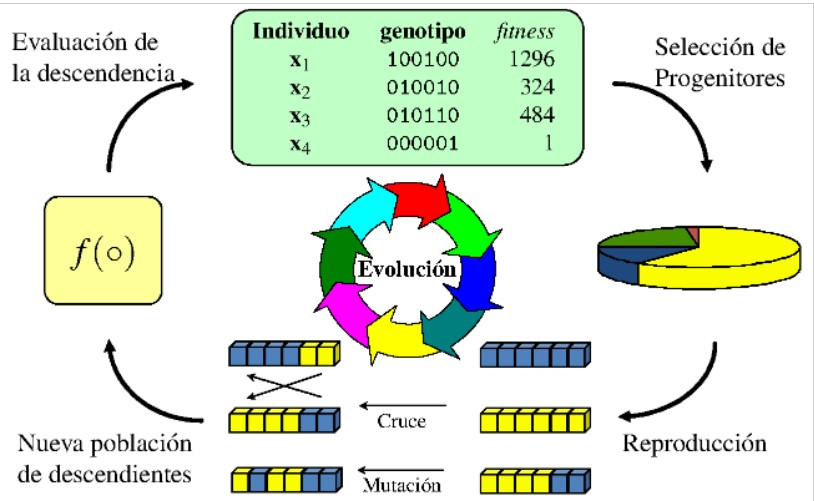
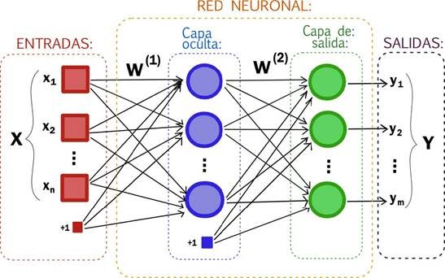

Busqueda Tabu
La búsqueda tabú (Tabú Search - TS) es un procedimiento o estrategia dado a conocer en los trabajos de Glover, y que esta teniendo grandes exitos y mucha aceptación en los últimos años. Según su creador, es un procedimiento que «explora el espacio de soluciones más alla del óptimo local».
Una característica distintiva de este procedimiento es el uso de memoria adaptativa y de estrategias especiales de resolución de problemas. TS es el origen del enfoque basado en memoria y estrategia intensiva en la literatura metaheurística. La filosofía de la búsqueda tabú es derivar y explotar una colección de estrategias inteligentes para la resolución de problemas, basadas en procedimientos explícitos de aprendizaje.

Temple Simulado
Este algoritmo está inspirado en un fenómeno físico que se observa en el templado de metales y en la cristalización de disoluciones: Todo conjunto de átomos o moléculas tiene un estado de energía que depende de cierta función de la temperatura del sistema.
A medida que lo vamos enfriando, el sistema va perdiendo energía hasta que se estabiliza. El fenómeno físico que se observa es que, dependiendo de cómo se realiza el enfriamiento, el estado de energía final es muy diferente.
A partir de este fenómeno físico se puede obtener un algoritmo que permite, en ciertos problemas, obtener soluciones mejores que las proporcionadas por otros algoritmos.

Algoritmos Genéticos
Un algoritmo genético (AG) es una técnica de búsqueda iterativa inspirada en los principios de selección natural. Los AG no buscan modelar la evolución biológica sino derivar estrategias de optimización.
La idea de los AG es optimizar (hallar el máximo o mínimo) una función objetivo utilizando los principios de la selección natural sobre los parámetros de la función.

Redes Neuronales
Este método trata de reproducir el proceso de solución de problemas del cerebro. Así como los humanos aplican el conocimiento ganado con la experiencia a nuevos problemas o situaciones, una red neural toma como ejemplos problemas resueltos para construir un sistema que toma decisiones y realiza clasificaciones.
Los problemas adecuados para la solución neural son aquellos que no tienen solución computacional precisa o que requieren algoritmos muy extensos como en el caso del reconocimiento de imágenes.